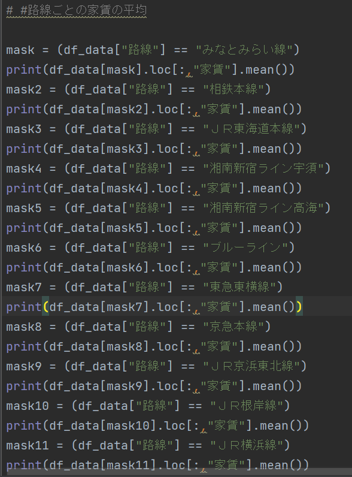
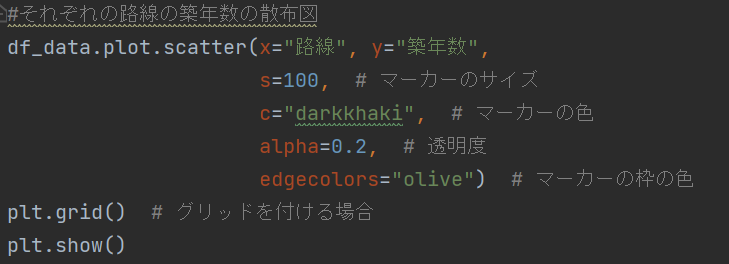
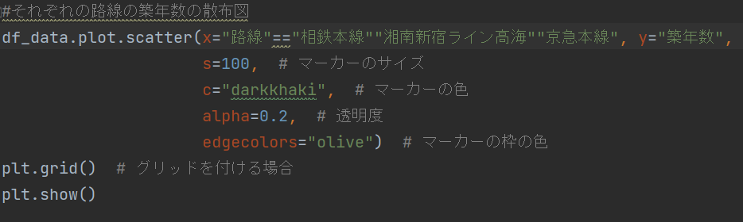
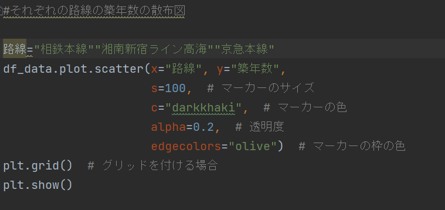

神大MMC生におすすめの居住エリア 自力
おすすめエリア
導き出せなっかった
与えられた項目
名称・カテゴリー・アドレス・アクセス・路線
駅・バス停・乗車時間・バス・徒歩・車・合計時間・築年数
構造・階数・家賃・管理費・敷金・礼金・間取り・面積・URL
決定要素
今回は、乗り換えの有無、家賃、通学時間、間取りを決定要素とした。
根拠1.乗り換えの有無
神奈川大学MMCの最寄り駅にある路線は
・横浜駅
→ みなとみらい線・相鉄本線・JR東海道本線・JR横須賀線・JR湘南新宿ライン宇須 高海・ブルーライン・東急東横線・京浜急行本線・JR京浜東北線・根岸線
・新横浜駅 → JR横浜線・JR東海道新幹線・ブルーライン
・みなとみらい駅 → みなとみらい線
・桜木町駅 → 根岸線・ブルーライン
であるため、それ以外の線は乗り換えが必要になる
しかし、新幹線は大学生の交通手段としてスタンダードでないので今回はJR東海道新幹線はないものとする。
根拠2.それぞれの路線の平均家賃
 
ここから、相鉄本線、湘南新宿ライン高海、京急本線に絞る
根拠3.上の路線の築年数の散布図

ここで、相鉄本線、湘南新宿ライン高海、京急本線のみのグラフが作成したかったのだが
うまく作成することが出来なかった。
どうしてもエラーか全体のグラフしか出来なかった
試した例


根拠4.駅のそれぞれの合計時間
根拠3の結果から出したかったのだが、根拠3がうまくいかず作成できなかった。
まとめ
本来はしっかりおすすめエリアを出したかったが、
今の自分の力じゃエラーから抜け出すことが出来なかった。
完成版
第７回 神大MMC生におすすめの居住エリア 助けあり